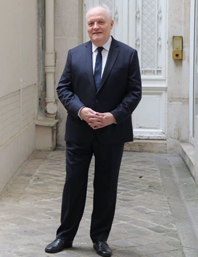
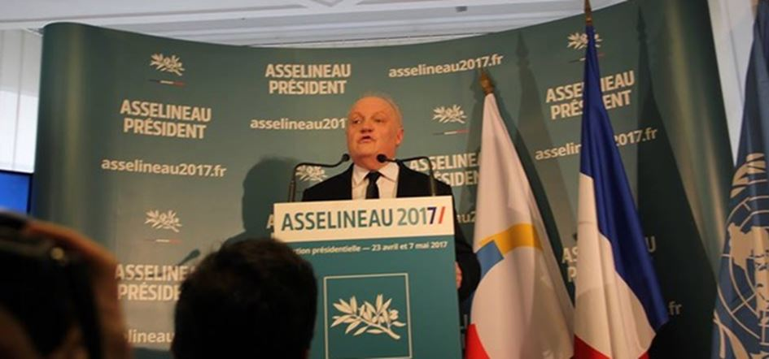
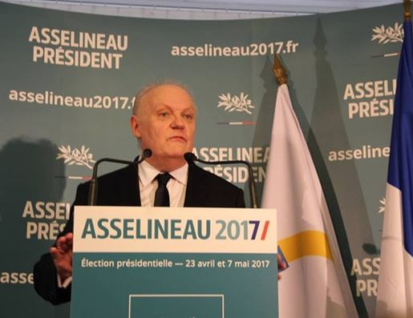

On peut se poser des dizaines de questions sur les candidats à l’élection présidentielle. Au sujet de François Asselineau une seule s’impose, pourquoi il subit ce « bashing », pourquoi est-il si méchamment et obstinément « ignoré », mis sur la touche par nos média (ajouter mainstream ça serai une tautologie) ?
Si pendant plusieurs années (il a entamé son chemin de croix il y a juste 10 ans) lui avec quelques initiés faisaient penser à une secte, un groupe d’illuminés, indignes de trois lignes dans une rubrique des faits divers d’une feuille de choux distribuée à la sortie du métro, aujourd’hui fort de 520 signatures des maires il est devenu inévitable ! Ils étaient une trentaine armés de caméras sur trépieds et monopods, d’appareils photos avec des objectifs plus longs que mon bras et de simples portables à se bousculaient à la portion lors de sa conférence vendredi 10 mars !
Un gourou, un prophète, voir un Messie ? Aujourd’hui, en politique qui est devenu une histoire de simple bizness, c’est tout bêtement impossible. Celui qui a vu ses très rares apparitions à la tv ou ses prestations sur le Net entend un discours très équilibré plein de bon sens auquel d’ailleurs il fait toujours appel en s’adressant aux Français. Bien sûr il choque avec son programme « du chef d’état » pas du premier ministre (sic) ! La sortie de l’euro et de l’OTAN immédiate, ça secoue !
Ce candidat a plusieurs particularités qui le distinguent de tous les autres. La langue du Molière parfaitement dominée, la connaissance de dossiers particuliers et sensibles, sur les dates et les chiffres il est imbattable, son programme est d’une logique implacable et surtout c’est du concret, d’où sa force (pouvoir) de persuasion. Qu’est qu’il demande ? Pas grande chose, juste un débat démocratique, d’avoir une possibilité de croiser ses arguments et avec ceux des autres candidats. Je suis sûr que, comme disent les ados, il les déchirera ! C’est pour ça qu’il est DANGEREUX ! Ça représente un énorme danger pour le système de la pensée unique ! Je n’ai aucun doute que les têtes pensantes de notre « Deep State » à nous, commencent à s’en rendre compte, il est plus dangereux pour eux que Marine. Du FN ils ont besoin pour faire passer « par défaut » leur représentant. François Asselineau, ce « rara avis » annoncera-t-il le printemps ? Non, je ne pense pas que le « miracle » peut se produire le printemps qui vient. Mais le processus est amorcé, il est encore jeune même pas une soixantaine, son parcours prouve que c’est un bosseur de choc, donc tous les espoirs sont permis !
La transformation de François Asselineau qui était au début « personne », passant ensuite par la case du « petit candidat » et qui est en train de devenir l’un des hommes le plus dangereux du système est-elle si étonnante ? Est-ce possible avec uniquement avec 16 000 adhérents, même s’ils y croient dur comme fer ?
Alors reprenons tout du début.
J’ai fait la connaissance de Monsieur Asselineau il y en a trois ans déjà. Un ami à moi m’a demandé d’interviewer quelques personnages qui me paraissaient intéressants et décalés de la pensée unique dominante, selon une expression consacrée, pour le compte de la TV russe.
Nous n’entendions pas à l’époque ni de Russia Today ni de Spoutnik sur ceux que l’on nomme aujourd’hui dissidents. J’ai mis sur la liste les personnes suivantes : François Asselineau, Olivier Berruyer, Charles Sannat et le maire de ma commune Christian Combon. La TV russe les a casé tous chez RIA Novosti et c’était déjà ça ! Depuis pas mal d’eau s’est écoulé sous les ponts de la Marne !
Pensez-vous que dans un temps imprécis je pourrai dire « j’y étais » ? Pourquoi pas ? Essayons d’être un peu optimiste ! Monsieur François Asselineau, a 59 ans, la conférence de presse a duré pas moins d’une heure et demie et il a tenu bon dans une petite pièce bourrée de journalistes de tous poils.
Après son discours d’une heure et demie il a répondu encore pendant une heure à des questions récurrentes des « bons média » comme de savoir où il trouvait l’argent pour sa campagne, ce qui différencie son programme de celui du Front National. Il s’est enfin plié de bonne grâce à une séance photo.
Pourquoi je vous raconte ça ? Pour dire que c’était assez sportif mais qu’il a tenu le coup vaillamment car il a pratiqué cette gymnastique toute sa vie. Bref il assure et je crache trois fois par-dessus l’épaule gauche, pour que ça dure.
Partager cette page